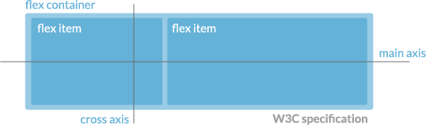
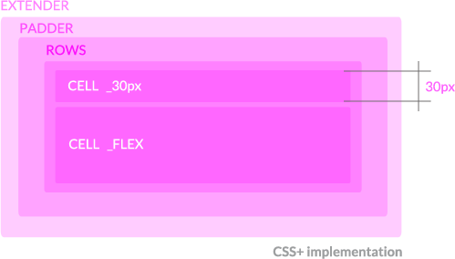
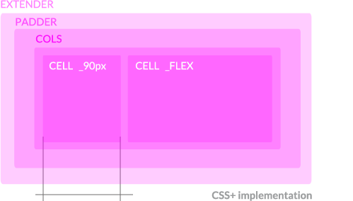

CSS+ provides a simple and fast way to realize flexible and responsive layouts
based on flexbox modeling.
Flexbox lets you specify a flexible container within which direct children can be also
flexible and float as columns or rows.
You can read a complete guide to flexbox here:
http://css-tricks.com/snippets/css/a-guide-to-flexbox/
Starting from these specifics CSS+ allows you to create complex, responsive and flexible
layouts in seconds based on these main concepts:
This is W3C flexbox specification:
And this is how CSS+ implements and extends W3C specification:
 in code:
Playground:
CSS+ comes with some Grunt tasks for css building.
So let's take a look at CSS+ directories:
----------- CORE -----------
all files inside this folder will be compiled and generate core.css
sources/core/*.less ======> build/core.css
flexScaffolding.less
- defines flexible elements like ROWS, COLS, CELL and their alignments
- provides shortcuts like _FLEX, _150px or _60pct for in HTML uses
- provides shortcuts for flexScaffolding.less classes like .cols() for .COLS and main-axis justification and cross-axis alignments
mediaQuery.less
- defines media ranges and resolutions keywords like @mobile, @desktop but also device orientations and pixel density
----------- PLUGINS -----------
all files inside this folder will be compiled and generate plugins.css
sources/plugins/*.less =====> build/plugins.css
- resolutionChecker.less
DESCRIPTION: adds :before and :after pseudo-tags to body tag to check current device and orientation (bottom-left corner of the page)
DEPENDENCIES: mediaQuery.less
- icons.less
DESCRIPTION: create inline shortcuts for icon (fontawesome and themify) fa-home or ti-arrow-up
DEPENDENCIES: none
----------- CUSTOMS -----------
your app files.
all files inside this folder will be compiled and generate customs.css
sources/customs/*.less ======> build/customs.css
- all .less files in this directory will built in customs.css
- use this directory for your custom app less files
Grunt tasks:
- less: create 3 css builds (core, demo and plugins) each one from respective folders;
- watch: initializes a watcher on all less files in CSS folder;
- cssmin: minify all css files inside build folder and generates a cssPlus-v.0.2-build.css
- clean: a basilar tool to delete a file
- minifyBuild: less + clean + cssmin
Try it on your phone
In CSS+ we can align elements on both main-axis and cross-axis using in-line syntax or css syntax.
Media queries are often frustrating. CSS+ can help you to manage devices resolution with some css shortcuts.
By default CSS+ sets these resolutions:
@screen-s-max: 19.9em; /* 319px */
@screen-min: 20.001em; /* 321px */
@screen-max: 40em; /* 640px */
@screen-m-min: 40.001em; /* 641px */
@screen-m-max: 64em; /* 1024px */
@screen-l-min: 64.001em; /* 1025px */
@screen-l-max: 90em; /* 1440px */
@screen-xl-min: 90.001em; /* 1441px */
@screen-xl-max: 120em; /* 1920px */
@screen-xxl-min: 120.001em; /* 1921px */
and these usefull media queries:
@smallmobile: ~"(max-width: @{screen-s-max})";
@mobile: ~"(min-width: @{screen-s-max}) and (max-width: @{screen-max})";
@tablet: ~"(min-width: @{screen-m-min}) and (max-width: @{screen-m-max})";
@notebook: ~"(min-width: @{screen-l-min}) and (max-width: @{screen-l-max})";
@desktop: ~"(min-width: @{screen-xl-min}) and (max-width: @{screen-xl-max})";
@wide: ~"(min-width: @{screen-xxl-min})";
@portrait: ~"(orientation:portrait)";
@landscape: ~"(orientation:landscape)";
@mobile-and-more: ~"(min-width: @{screen-min})";
@tablet-and-more: ~"(min-width: @{screen-m-min})";
@notebook-and-more: ~"(min-width: @{screen-l-min})";
@desktop-and-more: ~"(min-width: @{screen-xl-min})";
@highdensity: ~"only screen and (-webkit-min-device-pixel-ratio: 1.5)",
~"only screen and (min--moz-device-pixel-ratio: 1.5)",
~"only screen and (-o-min-device-pixel-ratio: 3/2)",
~"only screen and (min-device-pixel-ratio: 1.5)";
so you can code like:
@media @onlyScreen and @notebook-and-more{
.class_name{
styles for monitor wider thene 1024px
}
}
@media @onlyScreen and @tablet, @mobile and @landscape{
.class_name{
styles for tablets and mobiles in landscape
}
}
To see these media queries in action take a look at CSS+ Resolution Checker.
After a controversial moment we personally think that flexbox technologies are now mature and robust to use it in production. There are still some browsers vendor prefixes and some little bug across all of them. Here you can find a serie of links about flexbox that can helps you to find your way: